전산응용토목제도기능사 (2012-07-22 기출문제)
1과목: 토목제도(CAD)
1. 단철근 직사각형보에서 철근의 항복강도 fy=300MPa, d=600mm일 때 중립축의 깊이(c)를 강도설계법으로 구한 값은?
- 200mm
- 300mm
- 400mm
- 600mm
(정답률: 40%)

2. 단철근 직사각형 보에서 단면이 평형 단면일 경우 중립축의 위치 결정에서 사용하는 철근의 탄성계수는?
- 2,000MPa
- 20,000MPa
- 200,000MPa
- 2,000,000MPa
(정답률: 58%)
3. 철근 D29 ~ D35의 경우에 180° 표준갈고리의 구부림 최소 내면 반지름은? (단, db : 철근의 공칭지름)
- 2db
- 3db
- 4db
- 5db
(정답률: 74%)
4. 시방배합과 현장배합에 대한 설명으로 옳지 않은 것은?
- 시방배합에서 골재의 함수 상태는 표면건조포화상태를 기준으로 한다.
- 시방배합에서 굵은골재와 잔골재를 구분하는 기준은 5㎜ 체이다.
- 시방배합을 현장배합으로 고치는 경우 골재의 표면수량과 입도는 제외한다.
- 시방배합을 현장배합으로 고치는 경우 혼화제를 희석시킨 희석수량 등을 고려해야 한다.
(정답률: 66%)
5. 굳지 않은 콘크리트에 AE제를 사용하여 연행공기를 발생시켰다. 이 AE제 공기의 특징으로 옳은 것은?
- 콘크리트의 유동성을 저하 시킨다.
- 콘크리트의 온도가 낮을수록 AE공기가 잘 소실된다.
- 경화 후 동결융해에 대한 저항성이 증대된다.
- 기포의 직경이 클수록 잘 소실되지 않는다.
(정답률: 74%)
6. D35를 초과하는 철근의 이음에 대한 설명 중 옳은 것은?
- 겹침이음을 해야 한다.
- 일반적으로 갈고리를 하여 이음 한다.
- 용접이음을 해서는 안 된다.
- 이음부가 철근의 설계기준항복강도의 125% 이상을 발휘할 수 있어야 한다.
(정답률: 57%)
7. 경량골재 콘크리트의 특징으로 옳지 않은 것은?
- 자중이 크다.
- 내화성이 크다.
- 열전도율이 작다.
- 탄성계수가 작다.
(정답률: 55%)
8. 콘크리트 표면과 그에 가장 가까이 배치된 철근 표면 사이의 최단거리를 무엇이라 하는가?
- 피복두께
- 철근의 간격
- 콘크리트의 여유
- 철근의 두께
(정답률: 87%)
9. 하루 평균기온이 몇 °C를 초과할 경우에 서중 콘크리트로 시공하는가?
- 20°C
- 25°C
- 30°C
- 35°C
(정답률: 80%)
10. 상단과 하단에 2단 이상으로 배치된 철근에 대한 설명으로 옳은 것은?
- 순간격은 25㎜ 이상으로 하고 상하 철근을 동일 연직면내에 두어야 한다.
- 순간격은 20㎜ 이상으로 하고 상하 철근을 서로 엇갈리게 배치한다.
- 순간격은 25㎜ 이상으로 하고 상하 철근을 서로 엇갈리게 배치한다.
- 순각격은 20㎜ 이상으로 하고 상하 철근을 동일 연직면내에 두어야 한다.
(정답률: 55%)
11. 굳지 않은 콘크리트의 반죽 질기를 측정하는데 사용되는 시험은?
- 자르 시험
- 브리넬 시험
- 비비 시험
- 로스앤젤레스 시험
(정답률: 83%)
12. 다음 보기의 내용에서 괄호에 들어갈 말이 순서대로 연결된 것은?
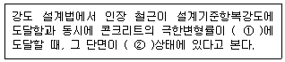
- ① 0.002 ② 최대변형률
- ① 0.002 ② 균형변형률
- ① 0.003 ② 최대변형률
- ① 0.003 ② 균형변형률
(정답률: 39%)
13. 지간인 ɭ인 단순보에서 등분포하중 ω를 받고 있을 때 최대 휨모멘트는?
- (ωɭ2)/2
- (ωɭ2)/4
- (ωɭ2)/8
- (ωɭ2)/16
(정답률: 57%)
14. 콘크리트의 크리프에 대한 설명으로 틀린 것은?
- 물-시멘트비가 적을수록 크리프는 감소한다.
- 단위 시멘트량이 적을수록 크리프는 감소한다.
- 주위의 습도가 높을수록 크리프는 감소한다.
- 주위의 온도가 높을수록 크리프는 감소한다.
(정답률: 39%)
15. 인장 철근 한 개의 지름이 30mm이고, 표준 갈고리를 가지는 인장 철근의 기본 정착 길이가 300mm라면 표준 갈고리를 가지는 이형 인장 철근의 정착 길이는? (단, 보정계수는 0.8이다.)
- 150mm
- 180mm
- 210mm
- 240mm
(정답률: 56%)
16. b=250㎜, d=460㎜인 직사각형 보에서 균형철근비는? (단, 철근의 항복강도는 420MPa, 콘크리트의 설계기준강도는 28MPa이다.)
- 0.0283
- 0.0250
- 0.0214
- 0.0176
(정답률: 34%)
17. 압축부재의 띠철근 수직간격 결정시 검토하여야 할 조건으로 옳은 것은?
- 300㎜ 이하
- 축방향 철근 지름의 16배 이하
- 띠철근 지름의 32배 이하
- 기둥 단면 최소 치수의 1/2 이하
(정답률: 42%)
18. 블리딩을 적게 하는 방법으로 옳지 않은 것은?
- 분말도가 높은 시멘트를 사용한다.
- 단위 수량을 크게 한다.
- AE제를 사용한다.
- 감수제를 사용한다.
(정답률: 70%)
19. 압축 이형철근의 정착길이 Ld는 기본정착길이에 적용 가능한 모든 보정계수를 곱하여 구하여야 한다. 이때 구한 정착길이 Ld는 항상 얼마 이상이어야 하는가?
- 150㎜
- 200㎜
- 250㎜
- 300㎜
(정답률: 29%)
20. 경간이 긴 단철근 직사각형 콘크리트보에 크기가 작은 하중이 작용할 경우 균열이 발생하지 않았다면 이에 대한 설명으로 옳지 않은 것은?
- 압축 응력은 압축측 콘크리트가 부담한다.
- 휘기 전에 평면인 단면은 변형 후에도 평면을 유지 한다.
- 응력은 중립축에서 최대이며 거리에 반비례한다.
- 변형률은 중립축으로부터의 거리에 비례한다.
(정답률: 43%)
2과목: 철근콘크리트
21. 도로교 설계에서 하중을 주하중, 부하중, 주하중에 상당하는 특수하중, 부하중에 상당하는 특수하중으로 구분할 때, 부하중에 해당하는 것은?
- 활하중
- 풍하중
- 고정하중
- 충격하중
(정답률: 58%)
22. 재료의 강도가 크고, 콘크리트에 비하여 부재의 치수를 작게 할 수 있어 지간이 긴 교량을 축조하는데 유리한 토목 구조물의 구조는?
- 강 구조
- 석 구조
- 목 구조
- 흙 구조
(정답률: 89%)
23. 프리스트레스 도입 직후 및 설계 하중이 작용할 때의 단면 응력에 대한 가정 사항이 아닌 것은?
- 콘크리트 전다면이 유효하게 작용한다.
- 콘크리트와 PS강재는 탄성 재료로 가정한다.
- 부재의 길이 방향의 변형률은 중립축으로부터의 거리에 비례한다.
- PS강재 및 철근은 각각 그 위치의 콘크리트 변형률은 다르다.
(정답률: 34%)
24. 1방향 슬래브에서 배력 철근을 배치하는 이유가 아닌 것은?
- 주철근의 간격유지
- 균열을 특정한 위치로 집중
- 온도 변화에 의한 수축 감소
- 고른 응력 분포
(정답률: 53%)
25. 독립확대 기초의 크기가 2m×3m이고, 허용 지지력이 20kN/m2일 때, 이 기초가 받을 수 있는 하중의 크기는?
- 90kN
- 120kN
- 150kN
- 180kN
(정답률: 86%)
26. 구조물 재료에서 강재의 특징으로 옳지 않는 것은?
- 균질성을 가지고 있다.
- 부재를 개수하거나 보강하기 쉽다.
- 차량 통행 등에 의한 소음이 거의 없다.
- 시공이 간편하여 공사 기간을 줄일 수 있다.
(정답률: 82%)
27. 다음 중 가장 최근에 건설된 국내 교량은?
- 서해대교
- 양화대교
- 한강대교
- 남해대교
(정답률: 52%)
28. 철근 콘크리트 기둥의 형식이 아닌 것은?
- 띠철근 기둥
- 나선 철근 기둥
- 합성 기둥
- 곡선 기둥
(정답률: 74%)
29. 프리스트레스 콘크리트 교량의 가설 방법으로 교대 후방의 작업장에서 교량 상부 구조를 세그먼트로 제작하고 교축 방향으로 밀어 내어 연속적으로 제작하는 방법은?
- PSM(precast segmental method)
- MSS(movable scaffolding system)
- FSM(full staging method)
- ILM(incremental launching method)
(정답률: 39%)
30. 프리스트레스의 손실의 원인 중 도입할 때의 손실 원인으로 옳은 것은?
- 마찰에 의한 손실
- 콘크리트의 크리프
- 콘크리트의 건조 수축
- PS 강재의 릴랙세이션
(정답률: 44%)
31. 강구조물에서 강재에 반복하여 지속적으로 작용하는 경우에 허용응력 이하의 작은 하중에서도 파괴되는 현상을 무엇이라 하는가?
- 취성파괴
- 피로파괴
- 연성파괴
- 극한파괴
(정답률: 46%)
32. 다음 중 한 개의 기둥에 전달되는 하중을 한 개의 기초가 단독으로 받도록 되어 있는 기초는?
- 경사 확대기초
- 벽 확대기초
- 연결 확대기초
- 전면기초
(정답률: 33%)
33. 콘크리트 속에 묻혀 있는 철근과 콘크리트 경계면에서 미끄러지지 않도록 저항하는 것을 부착이라 한다. 이러한 부착 작용의 3가지 원리에 해당하지 않는 것은?
- 시멘트 풀과 철근 표면의 정착 작용
- 콘크리트와 철근 표면의 마찰 작용
- 이형 철근 표면의 요철에 의한 기계적 작용
- 원형 철근 표면의 요철에 의한 기계적 작용
(정답률: 50%)
34. 토목 구조물의 공통적인 특징이 아닌 것은?
- 건설에 많은 비용과 시간이 소요된다.
- 대부분 자연 환경 속에 놓인다.
- 공공의 목적으로 건설된다.
- 다량 생산을 전제로 한다.
(정답률: 88%)
35. 두께에 비하여 폭이 넓은 판 모양의 구조물로 지지 조건에 의한 주철근 구조에 따라 2가지로 구분되는 것은?
- 옹벽
- 기둥
- 슬래브
- 확대기초
(정답률: 72%)
36. 문자의 크기를 나타낼 때 무엇을 기준으로 하는가?
- 모양
- 굵기
- 높이
- 서체
(정답률: 90%)
37. 테두리선, 표제란 등 도면 설정값을 미리 저장하고 있는 파일과 그 확장자가 옳은 것은?
- CAD 파일 – DXF
- 템플릿 파일 - DWT
- 문자 파일 – HWP
- 그림 파일 - DWG
(정답률: 39%)
38. 도면의 분류에서 구조도에 표시하는 것이 곤란한 특정부분의 형상, 치수, 기구 등을 자세하게 표시하는 도면은?
- 일반도
- 구조도
- 상세도
- 제작도
(정답률: 79%)
39. 단면의 경계 표시중 지반면(흙)을 나타내는 것은?
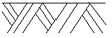
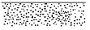
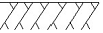
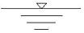
(정답률: 89%)
40. 정투상법에서 제1각법의 순서로 옳은 것은?
- 눈 → 물체 → 투상면
- 눈 → 투상면 → 물체
- 물체 → 눈 → 투상면
- 물체 → 투상면 → 눈
(정답률: 76%)
3과목: 토목일반구조
41. 도면을 CAD 좌표가 그려져 있는 판 위에 놓고 위치와 정보를 컴퓨터에 직접 입력하는 장치는?
- 키보드(keyboard)
- 스캐너(scanner)
- 디지타이저(digitizer)
- 프로젝터(projector)
(정답률: 45%)
42. 건설 재료의 단면 표시 중 모르타르를 나타낸 것은?
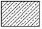
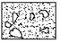
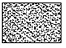
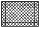
(정답률: 73%)
43. 철근의 기계적 이음을 표시하는 것은?
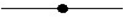
(정답률: 77%)
44. 그림과 같이 길이가 L인 I형강의 치수 표시로 가장 적합한 것은?
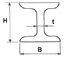
- I H-B×L×t
- I L-B×H×t
- I B×L×H×t
- I H×B×t-L
(정답률: 56%)
45. 도형의 중심을 나타내는 중심선, 위치 결정의 근거임을 나타내는 기준선 등에 사용되는 선의 종류는?
- 1점 쇄선
- 2점 쇄선
- 파선
- 가는 실선
(정답률: 76%)
46. 국제 및 국가 규격 명칭 중 한국산업 규격은?
- NF
- ISO
- DIN
- KS
(정답률: 72%)
47. 문자의 선 굵기는 한글자, 숫자 및 영자 문자 크기의 호칭에 대하여 얼마로 하는 것이 좋은가?
- 1/2
- 1/5
- 1/7
- 1/9
(정답률: 78%)
48. 그림과 같은 재료 단면의 경계 표시로 옳은 것은?
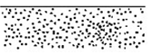
- 지반면(흙)
- 호박돌
- 잡석
- 모래(사질토)
(정답률: 86%)
49. 정투상도에서 표시되지 않는 도면은?
- 측면도
- 저면도
- 상세도
- 정면도
(정답률: 62%)
50. 도면의 크기 중 A4 크기의 2배가 되는 도면은?
- A5
- A3
- B4
- B3
(정답률: 80%)
51. 도로 종단면도의 기재 사항이 아닌 것은?
- 지반고
- 계획고
- 추가거리
- 도로의 폭
(정답률: 43%)
52. 투상도에서 물체 모양과 특징을 가장 잘 나타낼 수 있는 면은 어느 도면으로 선정하는 것이 좋은가?
- 정면도
- 평면도
- 배면도
- 측면도
(정답률: 66%)
53. CAD 명령어를 실행하는 방법이 아닌 것은?
- 마우스 포인터로 아이콘을 클릭한다.
- 명령(Command) 창에 직접 명령어를 입력한다.
- 풀다운 명령에서 해당 명령어를 찾아 클릭한다.
- 검색창에 직접 명령어를 입력한다.
(정답률: 57%)
54. KS 토목제도 통칙에서 척도의 비가 1:1보다 작은 척도를 무엇이라 하는가?
- 현척
- 배척
- 축척
- 소척
(정답률: 79%)
55. 각봉의 절단면을 바르게 표시한 것은?
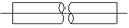
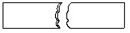
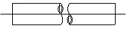
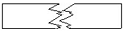
(정답률: 60%)
56. 각 모서리가 직각으로 만나는 물체는 모서리를 세 축으로 하여 투상도를 그리면 입체의 모양을 하나로 나타낼 수 있는데 이러한 투상법은?
- 정투상법
- 사투상법
- 축측 투상법
- 표고 투상법
(정답률: 35%)
57. 도면의 치수 표기 방법에 대한 설명으로 옳은 것은?
- 치수 단위는 cm를 원칙으로 하며, 단위 기호는 표기하지 않는다.
- 시수선이 세로일 때 치수를 치수선 오른쪽에 표시한다.
- 좁은 공간에서 인출선을 사용하여 치수를 표시할 수 있다.
- 치수는 선이 교차하는 곳에 표기한다.
(정답률: 72%)
58. "치수나 각종 기호 및 지시사항을 기입하기 위하여 도형에서 수평선으로 부터 빼낸 선"과 같은 종류의 선을 보기에서 골라 알맞게 짝지어진 것은?
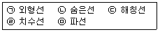
- ㉠, ㉡
- ㉡, ㉢
- ㉢, ㉣
- ㉣, ㉤
(정답률: 65%)
59. 철근의 표시법에서 철근과 철근 사이의 간격이 400㎜임을 바르게 나타낸 것은?
- D400
- Ø400
- @400 C.T.C
- 5@80=400
(정답률: 73%)
60. 치수와 치수선에 대한 설명으로 틀린 것은?
- 치수는 특별히 표시하지 않으면 마무리 치수로 표시한다.
- 치수선의 단말기호(화살표)를 치수 보조선의 안쪽에 그릴 수 없는 경우에는 생략한다.
- 치수선은 표시할 치수의 방향에 평행하게 긋는다.
- 치수선은 물제를 표시하는 도면의 외부에 긋는다.
(정답률: 65%)
c = (M / (fy * b)) * (1 + ((1 - (2 * a / b)) * ((M / (fy * b * c)) ^ 0.5)))
여기서 M은 단면의 굽힘모멘트, b는 단면의 너비, a는 단면에서 압축존과 인장존의 경계까지의 거리, c는 중립면의 깊이입니다.
이 문제에서는 단면의 형태가 직사각형이므로 a = b / 2 입니다. 또한, 단면의 높이 d와 중립면의 깊이 c는 다음과 같은 관계가 성립합니다.
c = d / 2
따라서 위의 식을 다음과 같이 변형할 수 있습니다.
c = (M / (fy * b)) * (1 + ((1 - 1/2) * ((M / (fy * b * (d/2))) ^ 0.5)))
c = (M / (fy * b)) * (1 + 0.5 * ((M / (fy * b * (d/2))) ^ 0.5)))
c = (M / (fy * b)) * (1 + 0.5 * ((2 * M / (fy * b * d)) ^ 0.5)))
c = (M / (fy * b)) * (1 + (M / (fy * b * d)) ^ 0.5)
여기서 굽힘모멘트 M은 최대 굽힘모멘트인 fy * Zx로 대체할 수 있습니다. Zx는 단면의 단면계수로, 직사각형 단면의 경우 Zx = bd2/6 입니다.
따라서 c는 다음과 같이 구할 수 있습니다.
c = (fy * Zx / (fy * b)) * (1 + (fy * Zx / (fy * b * d)) ^ 0.5)
c = (Zx / b) * (1 + (Zx / (b * d)) ^ 0.5)
c = (d / 2) * (1 + (1 / 12) ^ 0.5)
c = 0.5 * d * 1.035
c = 0.5175d
따라서 d = 600mm일 때 c는 다음과 같습니다.
c = 0.5175 * 600
c = 310.5
따라서 가장 가까운 값은 "300mm"입니다.